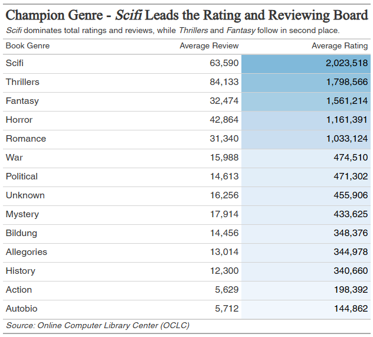
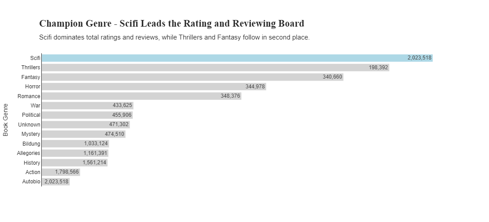
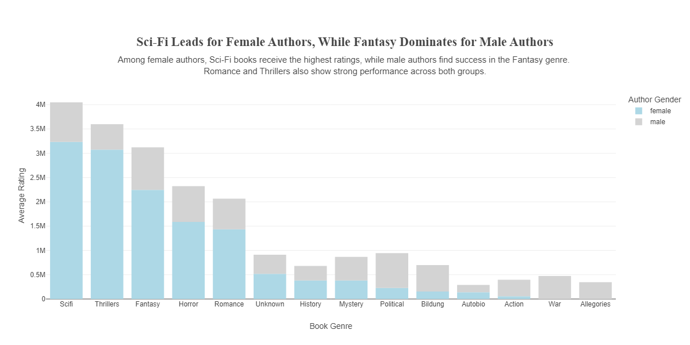
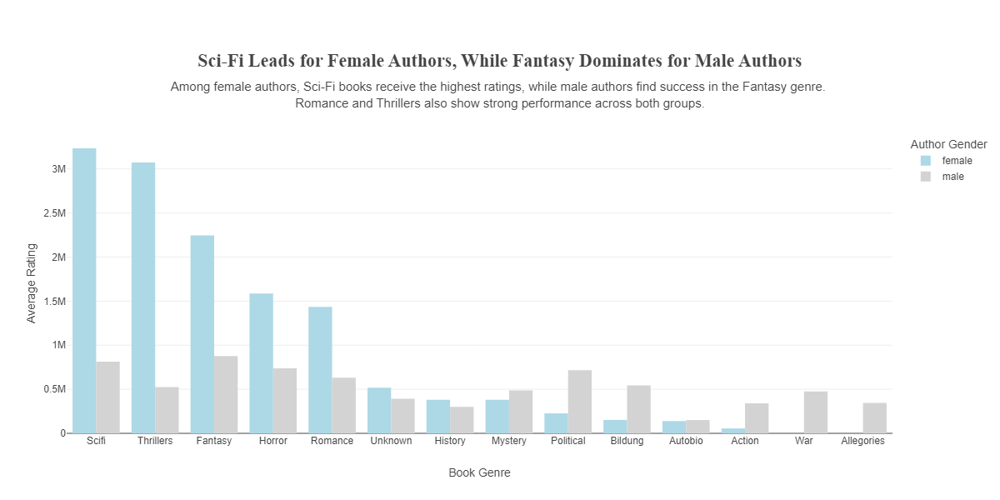
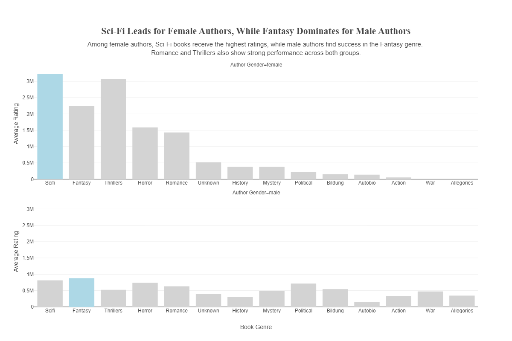

Book Genre Ratings Analysis
1 Project Overview
This project analyzes book genres and their ratings using Pandas, Plotly, and GreatTables. It presents structured tables and different bar charts to explore how ratings vary across genres and between male and female readers.
1.1 Key Features
- Formatted Data Tables for book genres and their ratings.
- Stacked/Paired/Facet Charts to compare ratings between male and female readers.
- Custom Styling for clear and professional presentation.
- Data Processing with Pandas to analyze genre-based ratings.
2 Visualizations
2.1 Formatted Data Table and Horizontal Bar Chart: Genre Ratings
2.1.1 Formatted Data Table
A well-structured table displaying the average ratings for each book genre. The table is color-coded to highlight the highest and lowest rated genres.
- This table provides numerical data for average reviews and ratings across different genres.
- Sci-Fi has the highest average rating (2,023,518), followed by Thrillers (1,798,566) and Fantasy (1,561,214).
- Action and Autobiographies have the lowest ratings in the dataset.

2.1.2 Horizontal Bar Chart
- This chart ranks genres based on their total ratings.
- Sci-Fi leads the ratings board, followed by Thrillers and Fantasy.
- Action and Autobiographies receive the lowest ratings among the listed genres.

2.2 Stacked/Paired/Facet Charts: Male vs. Female Ratings
They compare book ratings between male and female readers for different genres.
2.2.1 Stacked Chart
- This chart stacks male and female author ratings on top of each other.
- It highlights the contribution of each gender to overall ratings in different genres.
- Sci-Fi and Thrillers maintain the highest overall ratings, showing strong performance across genders.

2.2.2 Paired Chart
- This bar chart presents book ratings split by gender, with bars for male and female authors side by side for comparison.
- Sci-Fi, Thrillers, and Fantasy stand out as the most highly rated genres, with Sci-Fi leading for female authors and Fantasy leading for male authors.

2.3 Facet Chart: Male vs. Female Ratings
- This chart separates book ratings by author gender, displaying ratings for various genres.
- Sci-Fi has the highest ratings among female authors, while Fantasy dominates for male authors.
- Thrillers and Romance are also strong performers across both genders.

3 Technologies Used
- Python (for data cleaning and analysis)
- Pandas (for processing book genre ratings)
- Plotly (for creating bar charts)
- GreatTables (for generating structured data tables)
- Jupyter Notebook (for running and displaying results)
4 Future Improvements
- Add more demographic insights (e.g., age-based preferences).
- Introduce interactive filters for exploring ratings dynamically.
- Enhance styling and readability of tables and charts.
- Expand dataset to include more book genres and user reviews.